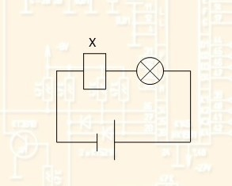
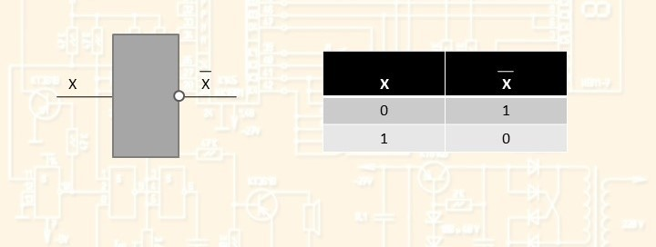

Схема НЕ (инвертор) реализует операцию отрицания. Условное обозначение схемы НЕ : X X 
 X Электрическая схема: источник питания лампочка ключ провода В устройстве используется автоматический ключ. Когда тока на нем нет, пластинка замыкается и лампочка горит. Если на ключ подать напряжение, то пластинка прижимается и цепь размыкается. Лампочка не горит. Инвертор условно изображается схематически электрической цепью вида: